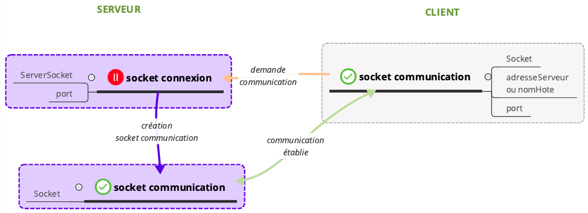
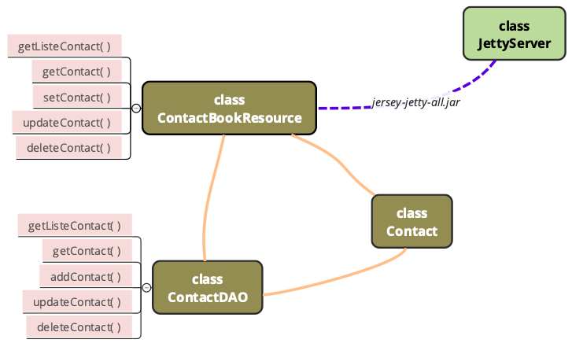

Java est un langage orienté objet qui utilise un compilateur (javac) puis une machine virtuelle compatible toutes plateformes JVM Java Virtual Machine pour interpréter le Byte code. De ce fait, c'est un langage offrant une grande portabilité. C’est un langage à la fois compilé et interprété. Il est donc plus rapide que Python (interprété) mais plus lent que C++ (compilé).

Table des matières :
- Exécuter Java au Terminal
- Les dates
- La programmation réseau
- Programmation client-serveur
- Les proxys
- Le mécanisme RMI
- JMS
- Les services Web
Exécuter Java au terminal
Pour exécuter un programme Java en utilisant le terminal, il faut d'abord se rendre dans le dossier comportant le fichier, puis compiler le programme avec la commande
javac monFichier.javaLe fichier se transforme alors en binaire exécutable par la Machine Virtuelle Java : monFichier.class. Pour exécuter ce programme il reste maintenant à utiliser la commande
java monFichierNotons que java -version en ligne de commande permet de vérifier que Java est bien installé.
Les dates
La classe GregorianCalendar
L'utilisation de la classe Date est obsolète. Il est préférable d'utiliser la classe GregorianCalendar qui hérite de la classe abstraite Calendar.
On peut afficher le timestamp du moment sans formattage particulier en utilisant
new GregorianCalendar().getTime()Pour instancier une date à la date du jour, on utilise
GregorianCalendar date = new GregorianCalendar();Pour instancier une date à la date du 03/06/2018
GregorianCalendar date = new GreogorianCalendar(2018,05,03);car les mois sont notés de 0 à 11.
Les différents éléments de date sont les suivants :
date.get(Calendar.YEAR);
date.get(Calendar.MONTH);
date.get(Calendar.DAY_OF_MONTH);
date.get(Calendar.DAY_OF_WEEK);On remarque que Calendar.YEAR concerne la classe Calendar et non l’objet date. On peut modifier la date prise en compte dans l’objet date de la façon suivante :
date.set(Calendar.YEAR, annee);
date.set(Calendar.MONTH, mois);
date.set(Calendar.DAY_OF_MONTH, jour);
date.set(Calendar.DAY_OF_WEEK, jourDeLaSemaine);Toutefois, si on veut afficher correctement la date, on peut utiliser
System.out.printf("%04d,%02d,%02d,%02d\n",annee,mois,jour,jourSemaine);ou encore formatter de la façon suivante :
SimpleDateFormat formattage = new SimpleDateFormat("yyyy-MM-dd-EEEE");
System.out.println(formattage.format(date.getTime()));Exemple de saisie clavier de date puis affichage de la date saisie :
Scanner saisie = new Scanner(System.in);
System.out.println("entrez année");
int annee = saisie.nextInt();
System.out.println("entrez mois");
int mois = saisie.nextInt();
System.out.println("entrez jour");
int jour = saisie.nextInt();
GregorianCalendar date = new GregorianCalendar(annee,mois,jour);
date.set(Calendar.MONTH, mois-1);
SimpleDateFormat formattage = new SimpleDateFormat("yyyy-MM-dd-EEEE");
System.out.println(formattage.format(date.getTime()));Répétition d'une instruction à l'aide d'un thread
La classe Timer :
import java.util.*;Pour répéter une action à intervalles réguliers, on peut utiliser l'équivalent d'un thread avec la classe Timer.
public class Principale {
public static void main(String[] args) {
Timer timer = new Timer();
TimerTask tache = new Action();
timer.schedule(tache, 2000, 10); // toutes les 2000 ms, 10 répétitions
}
}et la tâche à effectuer plusieurs fois :
public class Action extends TimerTask{
public void run(){
System.out.println("hello world");
}
}Directement avec la classe Thread :
On peut également obtenir le même résultat sans la classe Timer en utilisant un thread.
public class Principale {
public static void main(String[] args) {
Action t = new Action();
t.start();
}
}et la tâche à effectuer plusieurs fois :
public class TimeThread extends Thread {
public void run(){
for(int i=0; i<10; i++) { // 10 répétitions
try {
Thread.sleep(2000); // toutes les 2000 ms
System.out.println("hello world");
} catch (Exception e) {
e.printStackTrace();
}
}
}
}Gestion des exceptions
La gestion des exceptions assure l'exécution continue du programme. Elle consiste à repérer un morceau de code qui pourrait générer une erreur, et donner une suite d'instructions à suivre en cas d'erreur pour éviter que le programme s'arrête brutalement.
import java.util.*;L'utilisation des mot-clés try-catch-finally gère l'exception. try entoure l'exception, catch indique les instructions à suivre en cas d'erreur, finally est facultatif et indique les instructions à suivre dans tous les cas. La gestion des exceptions peut également servir à analyser les causes de l'erreur.
int j = 20, i = 0;
try {
System.out.println(j/i);
} catch (ArithmeticException e)
System.out.println("division par zéro");
}L'utilisation du mot-clé throws dans une méthode rejette la gestion de l'exception à la classe qui appelle cette méthode.
Dans l'exemple suivant, la gestion de l'exception dans le constructeur de Personne est laissée à la classe Principale.
public class Personne {
public int age = 0;
public Personne(int age) throws Exception {
this.age = age;
}
}
public class Principale {
public static void main(String[] args) {
try {
Personne p = new Personne("Edouard");
int ageRecherche = p.age - 3; // l'age de la personne il y a 3 ans
} catch (Exception e) {
e.printStackTrace();
e.getClass().getName() + " : " + e.getMessage();
}
}
}Notons la différence entre une erreur de compilation (détectée à l'analyse statique sans exécution du code) et une erreur d'exécution. La levée d'une exception ne concerne que les erreurs d'exécution.
Les tableaux
Les tableaux sont des éléments de stockage statiques, dont la taille ne doit pas varier. Ainsi, on ne peut pas rajouter d'élément à un tableau sous peine d'en modifier totalement la structure. Les tableaux sont indexés à partir de 0 et n'admettent pas de système clé-valeur.
import java.util.*;Déclaration d'un tableau
Un tableau doit être déclaré en indiquant le type d'objet qu'il contient. Il ne peut pas contenir des objets de types différents. Toutefois, on peut facilement déroger à cette règle en créant des tableaux de type Object qui est très large.
Object[] tab = {"hello", 13, 's'};Lors de la déclaration d'un tableau, doit être également précisé le nombre d'éléments qu'il contient. Le typage d'un élément et la taille du tableau ne pourront plus être modifiés ultérieurement.
int[] tab = {12, 1, 34, 21};Lors de la déclaration d'un tableau vide, tous les éléments sont initialisés automatiquement, les nombres à 0, les booleans à false, les objets et chaînes de caractères à null.
int[] tab = new int[6];Affichage d'un tableau
for(int i=0; i< tab.length; i++){
System.out.print(tab[i]+"\t");ou encore
for(String valeur : tab){
System.out.print(valeur+"\t");Vector
La classe Vector, aujourd'hui désuète, permet de définir des tableaux utilisant des méthodes proches de celles des listes. Notons que la classe Vector est compatible avec la synchronisation à l'aide de threads.
Les collections
import java.util.*;Les collections (ensemble, liste, dictionnaires) sont des conteneurs dynamiques pouvant accepter des objets de types différents et dont la taille varie.
les ensembles contiennent des éléments non indexés et sans relation d'ordre. On ne peut donc pas y accéder en faisant référence à un String ou un index. Toutefois, on peut parcourir tout l'ensemble et vérifier si un terme appartient à cet ensemble. On les utilise essentiellement pour afficher les éléments d'un dictionnaire après avoir créé un ensemble de clés.
Les listes contiennent des index auxquels sont associés une valeur unique. Elles s'apparentent à des tableaux sauf que leur taille peut varier et qu'elles peuvent contenir des éléments de types différents.
Les dictionnaire contiennent des clés auxquelles sont associées une valeur unique.
Les listes
| Objectif | Code |
|---|---|
| définir une liste | ArrayList maListe = new ArrayList(); |
| définir une liste à partir d'un tableau | String[] tableau = new String("toto", "tata");
ArraList maListe = new ArrayList(Arrays.asList(tableau)); |
| définir une liste composée d'un seul type d'élément | ArrayList<String> maListe = new ArrayList<String>(); |
| ajouter l'élément bonjour | maListe.add("bonjour") |
| ajouter l'élément bonjour à l'emplacement d'indice 4 | maListe.add(4, "bonjour") |
| remplace l'élément d'indice 4 par bonjour | maListe.set(4, "bonjour") |
| renvoyer l'élément d'indice 4 | maListe.get(4) |
| renvoyer la taille de maListe | maListe.size() |
| renvoyer l'indice de l'élément bonjour | maListe.indexOf("bonjour") |
| supprimer l'élément d'indice 4 | maListe.remove(4) |
| comparer l'élément d'indice 4 à celui d'indice 5 | maListe.get(4).equals(maListe.get(5) |
| tester si l'élément bonjour appartient à maListe | maListe.contains("bonjour) |
| vider maListe | maListe.clear() |
| copier par valeurs de maListe | ArrayList listeCopie = (ArrayList) maListe.clone(); |
ArrayList ne fonctionne qu’avec des types objets pour produire des objets. Ainsi on ne peut pas avoir de liste avec des éléments de type int. Pour pallier ce problème, Java a prévu de faire correspondre à chaque type primitif un objet équivalent. Ainsi au type primitif int correspond l’objet Integer, au type primitif double correspond le type complexe Double. L'autoboxing permet de passer d'un type primitif à son objet correspondant de façon automatisée. En revanche, il convient de déclarer les listes avec les types objet et non les types primitifs. On écrira ainsi :
ArrayList<Integer> maListe = new ArrayList<Integer>();Attention, la comparaison de 2 éléments ne se fait pas avec l'opérateur == car on compare des objets et non des types primitifs.
Pour afficher une liste :
Iterator iterateur = maListe.iterator();
while(iterateur.hasNext()) {
System.out.print(iterateur.next()+"\t");
}for(int i=0; i<maListe.size();i++) {
System.out.print(maListe.get(i)+"\t");
}Les dictionnaires
| Objectif | Code |
|---|---|
| définir un dictionnaire | HashMap dico = new HashMap(); |
| définir une liste composée d'un type d'élément spécifique | HashMap<String, String> dico = new HashMap<String, String>(); |
| ajouter l'élément lundi, Monday | dico.put("lundi", Monday) |
| remplace l'élément de clé lundi | dico.put("lundi", "Montag") |
| renvoyer la valeur de l'élément de clé lundi | dico.get("lundi") |
| renvoyer la taille de dico | dico.size() |
| supprimer l'élément de clé lundi | dico.remove("lundi") |
| vider dico | dico.clear() |
Pour afficher un dictionnaire :
HashMap dico = new HashMap();
Set ensemble = dico.keySet();
for(Object clef : ensemble){
System.out.println(clef+" :"dico.get(clef));
}Iterator iterateur = ensemble.iterator();
while(iterateur.hasNext()) {
Object clef = iterateur.next();
System.out.println(clef+":"+dico.get(clef));
}La programmation réseau
Rappels sur les réseaux
La communication réseau est initialement définie par le modèle OSI en 7 couches. Toutefois, la plupart des logiciels reposent sur le modèle TCP/IP en 4 couches : réseau, Internet, transport, application. C'est dans cette dernière couche du modèle TCP/IP que se positionne Java.
Notons que par défaut les principaux protocoles de transfert utilisent les ports suivants :
- http : port 80
- ftp : port 20 ou 21
- smtp : port 25
La classe InetAddress
import java.net.*;Pour manipuler des adresses IP, on utilise la classe InetAddress. Par exemple pour obtenir l'adresse IP d'un site connu par son nom de domaine :
try{
InetAddress adresse = InetAddress.getByName("meteocentrale.ch");
}catch (UnknownHostException e) {
e.printStackTrace();
}et pour connaître l'adresse IP de localhost :
try{
InetAddress adresse = InetAddress.getByName("localhost");
}catch (UnknownHostException e) {
e.printStackTrace();
}Les méthodes associées à la classe InetAddress nécessitent également la gestion de UnknownHostException :
| Objectif | Code |
|---|---|
| nom de l'hôte (client) | adresse.getHostName() |
| adresse IP | adresse.getHostAddress() |
| teste si l'adresse est de type boucle locale | adresse.isLoopbackAddress() |
Certains sites Internet peuvent avoir plusieurs adresses IP :
try{
InetAddress[] adresses = InetAddress.getAllByName("amazon.fr");
System.out.println("Toutes les adresses IP : ");
for(InetAddress valeur : adresses) {
System.out.println(" - " + valeur.getHostAddress());
}
} catch(UnknownHostException e) {
e.printStackTrace();
}La classe URL
On peut également utiliser la classe URL pour récupérer les données d'un site Internet :
import java.io.*;
import java.net.*;
try {
URL url = new URL("http://www.meteofrance.fr");
}catch(MalformedURLException e) {
e.printStackTrace();
}Les méthodes associées à la classe URL nécessitent également la gestion de MalformedURLException.
| Objectif | Code |
|---|---|
| nom du site | url.getAuthority() |
| port par défaut | url.getDefaultPort() |
| nom de l'hébergeur | url.getHost() |
| numéro de port spécifié | url.getPort() |
| protocole | url.getProtocol() |
Lorsque url.getPort() renvoie -1, cela signifie que le port n'a pas été spécifié dans l'URL.
Pour vérifier qu'une saisie utilisateur correspond à une url, on peut par exemple utiliser la condition :
if(host.matches("[a-zA-Z\\.]+"))
Les proxys
Un proxy constitue une autre façon de se connecter à un serveur. Le proxy est un intermédiaire faisant le lien entre le client et le serveur.
import java.io.IOException;
import java.net.InetSocketAddress;
import java.net.Proxy;
import java.net.Socket;
import java.net.SocketAddress;
//On crée une adresse correspondant à notre proxy
SocketAddress proxyAddress = new InetSocketAddress("10.10.10.10", 8080);
//On instancie la classe Proxy avec le type souhaité
Proxy proxy = new Proxy(Proxy.Type.SOCKS, proxyAddress);
//On crée notre socket utilisant le proxy
Socket s = new Socket(proxy);
//On crée l'adresse que l'on souhaite atteindre via le proxy
SocketAddress remote = new InetSocketAddress("www.adret-attitude.ch", 80);
try {
//On connecte le tout !
s.connect(remote);
} catch (IOException e) {
e.printStackTrace();
}| Objectif | Code |
|---|---|
| port côté serveur | s.getPort() |
| port côté client | s.getLocalPort() |
| nom hôte distant | s.getInetAddress().getHostName() |
| adresse hôte distant | s.getInetAddress().getHostAddress() |
| adresse socket hôte distant | s.getRemoteSocketAddress() |
try {
Socket s = new Socket("www.adret-attitude.ch", 80);
System.out.println("Port de communication côté serveur : " + s.getPort());
System.out.println("Port de communication côté client : " + s.getLocalPort());
System.out.println("Nom de l'hôte distant : " + s.getInetAddress().getHostName());
System.out.println("Adresse de l'hôte distant : " + s.getInetAddress().getHostAddress());
System.out.println("Adresse socket de l'hôte distant : " + s.getRemoteSocketAddress());
} catch (UnknownHostException e) {
e.printStackTrace();
} catch (IOException e) {
e.printStackTrace();
}Les sockets
Les sockets sont des API permettant de gérer les communications entre programmes au sein d'une structure client-serveur. La communication avec sockets nécessite la connaissance d'adresses, de ports, et l'utilisation de protocoles (TCP ou UDP). Une même socket sert aussi bien à envoyer qu'à recevoir des données. Les sockets travaillent en full-duplex, i.e. le client et le serveur peuvent envoyer et recevoir des signaux simultanément. Il n'y a donc pas de file d'attente. Notons également que le protocole TCP/IP s'appuie sur les sockets.
Une socket est identifiée de manière unique par l'adresse IP de la machine suivie du numéro de port utilisé, ce dernier étant compris entre 1024 et 65536.
import java.io.*;
import java.nio.*;
import java.util.*;
import java.net.*;Fonctionnement d'une communication par Sockets
Le serveur crée une socket de connexion sur un port défini, puis attend la demande de communication venant d'un client pour ouvrir une socket de communication. De son côté, le client crée une socket de communication à l'adresse du serveur et sur le port défini.
Une communication par Sockets est donc structurée de la façon suivante :
- une classe Server comprenant une socket de connexion et une socket de communication
- une classe Client comprenant une socket de communication
Tester les ports disponibles du client
Pour tester les 1024 premiers ports du client à l'aide de cette classe :
for(int i = 1; i <= 1024; i++){
try {
Socket soc = new Socket("127.0.0.1", i); // 127.0.0.1 est l'adresseIP de localhost
System.out.println("La machine autorise les connexions sur le port : " + i);
} catch (IOException e) {
System.out.println("Le port "+i+" n'est pas ouvert ou n'est pas autorisé.");
}
}Le mode connecté
En mode connecté, deux sockets établissent une communication durable qui permet d'éviter de transmettre l'identité de la socket destinatrice à chaque envoi. Dans ce cas, un des programmes prend le rôle du serveur et l'autre le rôle du client. Le serveur est donc vu comme un programme rendant des services aux clients. Le mode connecté utilise le protocole TCP.
Le serveur utilise la fonction bloquante accept(), qui ne libère pas le programme tant qu'elle n'a pas reçu de demande de communication.
Les méthodes de la classe Socket permettant d'obtenir des informations sur la connexion et nécessitent également la gestion de IOException :
| Instruction | Résultat |
|---|---|
| fournit l'adresse IP distante |
| fournit l'adresse IP locale |
| fournit le nmr de port distant |
| fournit le nmr de port local |
La machine virtuelle Java ferme les sockets non utilisés à la fin de l'exécution du programme. Toutefois, le nombre de sockets ouvertes par un programme est limité, ce qui conduit à des erreurs quand cette limite est atteinte. La méthode close() permet de fermer la connexion.
Pour l'envoi de messages : dis.writeUTF("hello"), dis.writeInt(12) ou ois.writeObject(obj)
Pour la réception de messages : dos.readUTF(), dos.readInt() ou oos.readObject()
Exemple de transmission d'une chaîne de caractères par TCP :
Il n'est pas nécessaire de transmettre la taille des String avec le message lorsqu'on utilise les méthodes writeUTF() et readUTF() qui détectent automatiquement la taille des String dans un flux. La quantité d'information transmise est donnée par message.length() si on note message la variable représentant le message reçu.
Dans cet exemple, un client transmet une chaîne de caractères au serveur.
Côté serveur
public class ServeurTCP {
public static void main(String[] args) {
try {
// creation socket serveur de connexion sur le port 5555
ServerSocket srv = new ServerSocket(5555);
// creation socket serveur de communication a la demande d'un client
Socket com = srv.accept();
// creation objet communication entrante en provenance du client
DataInputStream dis = new DataInputStream(com.getInputStream());
System.out.println("Message reçu : " + dis.readUTF());
// fermeture connexion
com.close();
srv.close();
} catch (IOException e) {
e.printStackTrace();
}
}
}Côté client
public class ClientTCP {
public static void main(String[] args) {
try {
// creation socket client de communication sur le port 5555
// Socket clt = new Socket("adresseServeur", 5555); ou
Socket clt = new Socket("nomHote", 5555);
// communication sortante vers le serveur
DataOutputStream dos = new DataOutputStream(clt.getOutputStream());
dos.writeUTF("hello world");
// fermeture connexion
clt.close();
} catch (IOException e) {
e.printStackTrace();
}
}
}Exemple de transmission d'un entier par TCP :
Dans cet exemple un serveur transmet un entier à un client.
Côté serveur
public class ServeurTCP {
public static void main(String[] args) {
try {
ServerSocket srv = new ServerSocket(5555);
Socket com = srv.accept();
DataOutputStream dos = new DataOutputStream(com.getOutputStream());
dos.writeInt(1420);
com.close();
srv.close();
} catch (IOException e) {
e.printStackTrace();
}
}
}Côté client
public class ClientTCP {
public static void main(String[] args) {
try {
Socket clt = new Socket("nomHote", 5555);
DataInputStream dis = new DataInputStream(clt.getInputStream());
System.out.println("Message received: " + dis.readInt());
clt.close();
} catch (IOException e) {
e.printStackTrace();
}
}
}Exemple de transmission d'un objet par TCP :

Dans cet exemple, un client transmet un objet sous forme de message au serveur.
Côté serveur
public class ServeurTCP {
public static void main(String[] args) {
try {
ServerSocket srv = new ServerSocket(5555);
Socket com = srv.accept();
// communication entrante, les data sont placees dans un objet
// transforme en Message, puis en String pour affichage
DataInputStream dis = new DataInputStream(com.getInputStream());
ObjectInputStream ois = new ObjectInputStream(dis);
ObjetEchange obj = (ObjetEchange) ois.readObject();
System.out.println("Message reçu : " + obj.toString());
com.close();
srv.close();
} catch (IOException e) {
e.printStackTrace();
} catch (ClassNotFoundException e) { // doit apparaitre
e.printStackTrace();
}
}
}Côté client
public class ClientTCP {
public static void main(String[] args) {
ObjetEchange obj = new ObjetEchange("steph",new Date(), "hello world");
try {
Socket clt = new Socket("nomHote", 5555);
// communication sortante, les data sont placees dans un objet transmis sous forme de Message
DataOutputStream dos = new DataOutputStream(clt.getOutputStream());
ObjectOutputStream oos = new ObjectOutputStream(dos);
oos.writeObject(obj);
clt.close();
} catch (IOException e) {
e.printStackTrace();
}
}
}et la classe ObjetEchange présente côté serveur et côté client, qui implémente l'interface Serializable nécessaire pour transmettre le message sous forme de data :
public class ObjetEchange implements Serializable{
// un objet de type ObjetEchange doit etre serialisable pour pouvoir etre transmis
String name;
Date date;
String msg;
public ObjetEchange(String name, GregorianCalendar date, String msg){
this.name = name;
this.date = date;
this.msg = msg;
}
@Override
public String toString(){
return "message = [ " + name + " , " + date.getTime()+" , "+msg +" ]";
}
}Exemple de serveur connecté dynamiquement à plusieurs clients par TCP :
Dans cet exemple, 10 clients transmettent une chaîne de caractère au serveur.
Le serveur ne traite qu'un seul client à la fois. Si ce traitement prend du temps, les autres clients peuvent être bloqués. Pour éviter ce problème, la gestion des connexions peut être pilotée par des threads. On peut utiliser un le pool de threads qui arrête les sockets de communication des threads ayant terminé leurs traitements pour passer la main aux threads suivants. Dans ce cas, les échanges avec les clients sont uniques puisque les communications sont interrompues. On peut également utiliser une création dynamique de threads au fur et à mesure des besoins. Dans ce cas, la communication peut être maintenue L'inconvénient est la possibilité de créer une infinité de threads ou encore de créer
Côté serveur
public class ServeurTCP {
public static void main(String[] args) {
try {
ServerSocket srv = new ServerSocket(5555);
for(int i=0; i<10; i++){ // pour 10 clients
Socket com = srv.accept();
ServerThread t = new ServerThread(com);
t.start();
}
} catch (IOException e) {
e.printStackTrace();
}
}
}
public class ServerThread extends Thread { // gestion des threads pour chaque communication
Socket com;
public ServerThread(Socket com) {
this.com = com;
}
public void run() {
try{
DataInputStream dis = new DataInputStream(com.getInputStream());
while(!fin){
dis.readUTF();
}
com.close();
} catch (IOException e) {
e.printStackTrace();
}
}
}Côté client
public class ClientTCP {
public static void main(String[] args) {
try {
Socket clt = new Socket("nomServeur", 5555);
DataOutputStream dos = new DataOutputStream(clt.getOutputStream());
dos.writeUTF("hello world");
clt.close();
} catch (IOException e) {
e.printStackTrace();
}
}
}Exemple de serveur connecté par un pool de threads à plusieurs clients par TCP :
Dans cet exemple, 10 clients transmettent une chaîne de caractère au serveur.
Côté serveur
Le serveur commence par créer un ensemble de threads en attente de recevoir une demande de connexion. Lorsqu'un client demande une connexion, elle est prise en charge par un des threads.

public class ServeurTCP {
public static void main(String[] args) {
try {
ServerSocket srv = new ServerSocket(5555);
ServerThread[] pool = new ServerThread[8]; // on choisit de travailler avec 8 threads
for(ServerThread t : pool) {
t = new ServerThread(srv);
t.start();
}
} catch (IOException e) {
e.printStackTrace();
}
}
}
public class ServerThread extends Thread { // gestion des threads pour chaque communication
ServerSocket srv;
public ServerThread(ServerSocket srv) {
this.srv = srv;
}
public void run() {
try{
for(int i=0; i<11; i++) { // on considère 10 clients
Socket com = srv.accept();
DataInputStream dis = new DataInputStream(com.getInputStream());
while(!fin) {
dis.readUTF();
}
com.close();
}
} catch (IOException e) {
e.printStackTrace();
}
}
}Côté client
public class ClientTCP {
public static void main(String[] args) {
try {
Socket clt = new Socket("nomServeur", 5555);
DataOutputStream dos = new DataOutputStream(clt.getOutputStream());
dos.writeUTF("hello world");
clt.close();
} catch (IOException e) {
e.printStackTrace();
}
}
}Le mode non connecté
En mode non connecté, le destinataire de la socket est précisé à chaque envoi. La communication utilise dans ce cas le protocole UDP qui envoie des données au destinataire sans le prévenir et sans s'assurer qu'elles sont bien arrivées.
Notons que TCP est plus sécurisé que UDP et UDP est plus rapide que TCP.
Pour l'envoi de messages : x.send(paquet)
Pour la réception de messages : x.receive(paquet)
Exemple de transmission d'une chaîne de caractères par UDP :
Dans cet exemple un client transmet une chaîne de caractères au serveur.
Côté serveur
public class ServerUDP {
public static void main(String[] args) {
// creation d'un buffer pour contenir le message a recevoir
byte[] buffer = new byte[256];
try {
// creation de la socket de reception
DatagramSocket srv = new DatagramSocket(5555);
// creation et reception du paquet
DatagramPacket paquet = new DatagramPacket(buffer, buffer.length);
srv.receive(paquet);
System.out.println("Message recu = " + new String(buffer));
srv.close();
} catch (IOException e) {
e.printStackTrace();
}
}
}Côté client
public class ClientUDP {
public static void main(String[] args) {
String message = "rendez-vous à 13h.";
try {
// creation de la socket emettrice
DatagramSocket clt = new DatagramSocket();
// recuperation de l'adresse IP
InetAddress adresseIP = InetAddress.getByName("nomHote");
// creation du packet et envoi du message
DatagramPacket paquet = new DatagramPacket(message.getBytes(), message.getBytes().length, adresseIP, 5555);
clt.send(paquet);
clt.close();
} catch (IOException e) {
e.printStackTrace();
}
}
}Exemple de transmission d'un entier par UDP :
Dans cet exemple un serveur transmet un entier à un client.
Côté serveur
public class ServerUDP {
public static void main(String[] args) {
// transformation de l'entier en byte[]
byte[] buffer = ByteBuffer.allocate(4).putInt(1402).array();
try {
DatagramSocket srv = new DatagramSocket(5555);
DatagramPacket paquet = new DatagramPacket(buffer, buffer.length);
clt.send(paquet);
srv.close();
} catch (IOException e) {
e.printStackTrace();
}
}
}Côté client
public class ClientUDP {
public static void main(String[] args) {
byte[] buffer = new byte[256];
try {
DatagramSocket clt = new DatagramSocket();
InetAddress adresseIP = InetAddress.getByName("nomServeur");
DatagramPacket paquet = new DatagramPacket(buffer, buffer.length, adresseIP, 5555);
clt.receive(paquet);
// conversion du message reçu en byte[] vers un entier
System.out.println("Message reçu : " + ByteBuffer.wrap(buffer).getInt());
} catch (IOException e) {
e.printStackTrace();
}
}
}Le mécanisme RMI
Le mécanisme RMI Remote Method Invocation permet d'appeler du code à distance, en créant un objet distant sur une machine serveur. Notons que l'appel à distance est bloquant. Cette technique offre pour avantages de mettre à jour le client de manière transparente et de masquer l'exécution distante du code tout en travaillant comme si l'exécution était locale.
import java.rmi.*;
import java.rmi.server.*;
import java.util.*;
import java.io.*;
import java.net.*;Fonctionnement d'une communication par RMI
Le client utilise une représentation locale de l'objet distant appelée stub, qui utilise elle-même une représentation distante appelée skeleton présente sur le serveur. Le client utilise alors ce stub comme si l'objet distant était local. Ils sont transparents pour le programmeur car ils n'apparaissent pas dans les différentes classes. En revanche, ils utilisent un serveur de nom, le registry, qui définit les liens entre stub, skeleton et l'interface. Le registry est créé en ligne de commande par l'instruction rmiregistry.
Une communication par RMI est structurée de la façon suivante :
- une interface de l'objet distant
- une classe Implementation
- une classe Serveur contenant le skeleton
- une classe Client contenant le stub
Pour l'envoi de messages : obj.maMethode()
Exemple de transmission d'une chaîne de caractères par RMI :
On présente ici une procédure où le client affiche Hello Mike en utilisant la procédure sayHello présente sur le serveur.
L'interface est l'entité partagée par le client et le serveur. Il n'est pas nécessaire qu'elle soit présente des deux côtés. Seule sa présence côté serveur est requise car elle est accessible de chaque côté grâce au registry.
public interface Hello extends Remote {
public void sayHello(String nom) throws RemoteException;
}Côté serveur :
L'implémentation de l'interface se fait côté serveur et ne doit pas être présente côté client.
public class Implementation extends UnicastRemoteObject implements Hello {
public Implementation() throws RemoteException {
super();
}
public void sayHello(String nom) throws RemoteException {
System.out.println("Hello "+nom);
}
}Dans la classe principale côté serveur, il faut instancier l'implémentation, puis le skeleton est défini pour transmettre les appels à l'objet distant.
public class Serveur {
public static void main(String[] args) {
try {
// creation de l'objet distant
Implementation objetDistant = new Implementation();
// associe l'url de Hello a l'objet distant dans le registry, ce qui crée le skeleton
Naming.rebind("Hello", objetDistant);
} catch (RemoteException e) {
e.printStackTrace();
} catch (MalformedURLException e) {
e.printStackTrace();
}
}
}Côté client :
Le stub implémente l'interface de l'objet distant pour le client.
L'appel côté client d'une méthode d'un objet distant consiste à obtenir une référence sur l'objet distant puis à appeler la méthode à partir de cette référence.
public class Client {
public static void main(String[] args) {
try {
// arg[0] represente l'url qui sera le 1er argument entre en ligne de commande
// lors de l'exécution de java HelloClient localhost:5555, donc ici localhost
// le fait de pointer vers l'adresse de l'interface Hello cree le stub
Hello obj = (Hello) Naming.lookup("//"+args[0]+"/Hello");
obj.sayHello("Mike");
} catch (RemoteException e) {
e.printStackTrace();
} catch (NotBoundException e) {
e.printStackTrace();
} catch (MalformedURLException e) {
e.printStackTrace();
}
}
}La gestion de sécurité se réalise à travers une instance de la classe java.rmi.RMISecurityManager, à la fois côté client et serveur :
if(System.getSecurityManager()==null){
System.setSecurityManager(new RMISecurityManager());
}qui nécessite la bibliothèque :
import java.lang.*;Il faut ensuite rajouter dans le package courant le fichier policy suivant :
grant{
permission java.net.SocketPermission "*:1024-65535", connect,accept";
permission java.net.SocketPermission "*:80", "connect";
}ou encore pour tout permettre :
grant{
permission java.security.AllPermission;
}Exemple d'une boite de messagerie par RMI :
Dans cet exemple, le client peut s'inscrire à un service de messagerie, envoyer un message composé de son nom, la date et le contenu, consulter le dernier message d'un client par son numéro de client.

L'interface :
public interface Boite extends Remote{
public int inscrire() throws RemoteException;
public void envoyerMessage(int nmrClient, Message mess) throws RemoteException;
public Message getMessage(int nmrClient) throws RemoteException;
}Côté serveur :
La classe Message :
public class Message implements Serializable{
public String nom;
public String mess;
public GregorianCalendar date;
public Message(String nom, GregorianCalendar date, String mess) {
this.nom = nom;
this.date = date.getTime();
this.mess = mess;
}
@Override
public String toString(){
return "Le "+date+" "+nom+" a écrit : "+mess;
}
}l'implémentation :
public class Implementation extends UnicastRemoteObject implements Boite{
public static int nmrClient;
public Vector<Message> vectMess; // la classe Vector est compatible avec les Threads
public Implementation() throws RemoteException{
super();
nmrClient = 0;
vectMess = new Vector(10);
}
public int inscrire() throws RemoteException{
return nmrClient++;
}
public void envoyerMessage(int nmrClient, Message mess) throws RemoteException{
vectMess.add(nmrClient, mess);
}
public Message getMessage(int nmrClient) throws RemoteException {
return (Message)vectMess.get(nmrClient);
}
}et la classe principale :
public class Serveur {
public static void main(String[] args){
try{
Implementation objDistant = new Implementation();
Naming.rebind("Boite", objDistant);
}catch(RemoteException e){
e.printStackTrace();
}catch(MalformedURLException e){
e.printStackTrace();
}
}
}Côté client :
public class Client {
public static void main(String[] args){
try{
Boite obj = (Boite)Naming.lookup("//"+args[0]+"/Boite");
int nmrClient = obj.inscrire();
Message mess = new Message("Mike", new GregorianCalendar(), "hello world");
obj.envoyerMessage(nmrClient, mess);
System.out.println("Dernier message : "+obj.getMessage(nmrClient).toString());
}catch(RemoteException e){
e.printStackTrace();
}catch(NotBoundException e){
e.printStackTrace();
}catch(MalformedURLException e){
e.printStackTrace();
}
}
}Si les objets distants attendent la connexion en permanence, les ressources mémoire sont monopolisées inutilement. Pour cette raison, on préfère créer des objets distants activables. L'utilisation de la classe UnicastRemoteObjetct est réservée au développement d'objets distants temporaires.
Notons que l'application cliente devra également gérer la synchronisation des appels à distance à l'aide de threads pour éviter le blocage du système.
La gestion de sécurité est modifiée pour pouvoir créer le groupe d'activation :
grant{
permission java.net.SocketPermission "machine:*", accept, resolve";
}La communication par JMS
JMS Java Message Service est une API spécialisée dans la création, l'envoi et la lecture de messages. JMS s'apparente donc à un service de messagerie permettant d'envoyer des messages d'une application à une autre sur un poste distant. Les particularités de JMS sont les suivantes :
- la communication est asynchrone, un message arrivera au client sans qu'il n'ait fait de requête
- JMS est fiable, car elle s'assure que le message est bien délivré
import java.util.*;
import javax.naming.*;
import javax.jms.*;Fonctionnement de JMS
Les messages sont envoyés sur un objet intermédiaire MOM Message Oriented Middleware de type JMSConnectionFactory, et le récepteur doit venir les chercher. Des bus gèrent les transports de messages vers les objets intermédiaires. De ce fait, il est inutile d'établir une connexion entre un émetteur et un récepteur. Par ailleurs, le fournisseur joue le rôle de plateforme de messagerie, comme par exemple Apache ActiveMQ
JMS contient les classes suivantes :
- Serveur (Publisher ou Sender créé des messages)
- Client (Subscriber ou Receiver lit les messages)
- ObjetEchange
Ce mode de communication indirect permet de mettre en place des services avancés :
- transaction : envoi et réception groupés
- persistance : retransmission des messages en cas de panne
- multicast : communication de groupe
- log : trace des échanges
- gestion des droits d'accès
Queue et Topic
JMS repose sur deux modes de communication principaux, la communication point-à-point et la communication événementielle.
Dans la communication point-à-point, l'objet intermédiaire est une file d'attente (queue). Plusieurs senders peuvent envoyer sur la même file d'attente mais un seul receiver peut voir le message. On parle de communication N à 1. La communication est asynchrone et mémorisée. C'est le cas par exemple lorsqu'on utilise une imprimante en mode connecté, ou encore lorsqu'on utilise une boîte mail.
Dans la communication événementielle, l'objet intermédiaire est un sujet (topic). Les publishers envoient leurs messages sur un topic. Les subscribers s'inscrivent au topic pour recevoir les messages publiés sur ce topic. Plusieurs publishers peuvent envoyer des messages sur le même topic et plusieurs subscribers peuvent consulter les messages du topic. C'est le cas par exemple lors d'un fil de discussion dans un tchat.
Pour l'envoi de messages : publisher.publish(mess) pour Topic, sender.send(mess) pour Queue
Pour la réception de messages : subscriber.receive() pour Topic, receiver.receive() pour Queue
Exemple d'une communication Topic avec JMS 1.1 :
Dans cet exemple le serveur envoie une chaîne de caractères à un client.
Partie commune au serveur et au client dans un bloc try-catch :
// creation du contexte
InitialContext ctx = new InitialContext();
// creation et acces au topic
Topic topic = (Topic) ctx.lookup("MyTopic");
// connexion au provider, creation de l'objet intermediaire
TopicConnectionFactory factory = (TopicConnectionFactory) ctx.lookup("MyConnectionFactory");
// connexion au bus
TopicConnection conn = factory.createTopicConnection();
// creation de session
// false pour spécifier que les messages reçus seront traités en accord
// avec le second paramètre Session.AUTO_ACKNOWLEDGE
TopicSession sess = conn.createTopicSession(false, Session.AUTO_ACKNOWLEDGE);Côté serveur :
public class Server {
public static void main(String[] args) {
try {
// Le detail des proprietes (url, port, ...) se trouve dans jndi.properties.
// La creation de props n'est nécessaire que côté serveur
Properties props = new Properties();
// partie commune
// creation d'un objet emetteur
TopicPublisher pbr = sess.createPublisher(topic);
pbr.setDeliveryMode(DeliveryMode.NON_PERSISTENT);
// publication d'un message "hello world"
conn.start();
TextMessage mess = sess.createTextMessage("hello world");
// possibilité de changer ultérieurement avec message.setText("hello world");
pbr.publish(mess);
// fermeture de connexion
conn.close();
} catch (Exception e) {
e.printStackTrace();
}
}
}Côté client :
public class Client {
public static void main(String[] args) {
try {
// partie commune
// creation d'un objet destinataire
TopicSubscriber scr = sess.createSubscriber(topic);
// lecture d'un message, receive est une fonction bloquante
conn.start();
TextMessage mess = (TextMessage) scr.receive();
System.out.println("message lu : " + mess.getText());
conn.close();
} catch( Exception e ) {
e.printStackTrace();
}
}
}Exemple d'une communication Queue avec JMS 1.1 :
Dans cet exemple un client envoie une chaîne de caractères au serveur.
Partie commune au serveur et au client dans un bloc try-catch :
InitialContext ctx = new InitialContext();
// creation et acces a la file d'attente
Queue queue = (Queue) ctx.lookup("MyQueue");
QueueConnectionFactory factory = (QueueConnectionFactory) ctx.lookup("MyConnectionFactory");
QueueConnection conn = factory.createQueueConnection();
QueueSession sess = conn.createQueueSession(false, Session.AUTO_ACKNOWLEDGE);Côté serveur :
public class Serveur {
public static void main(String[] args) {
try {
// partie commune
QueueReceiver rcv = sess.createReceiver(queue);
conn.start();
TextMessage mess = (TextMessage) rcv.receive();
System.out.println("message reçu: " + mess.getText());
conn.close();
} catch (Exception e) {
e.printStackTrace();
}
}
}Côté client
public class Client {
public static void main(String[] args) {
try {
// partie commune
QueueSender sdr = sess.createSender(queue);
sdr.setDeliveryMode(DeliveryMode.NON_PERSISTENT);
conn.start();
TextMessage mess = sess.createTextMessage("hello world");
sdr.send(mess);
conn.close();
} catch( Exception e ) {
e.printStackTrace();
}
}
}Exemple d'un échange de mails Queue avec JMS 1.1 :
Dans cet exemple, un serveur transmet un mail sous forme d'objet et reçoit une chaîne de caractères en réponse d'un client.
InitialContext ctx = new InitialContext();
Queue queue = (Queue) ctx.lookup("MyQueue");
QueueConnectionFactory factory = (QueueConnectionFactory) ctx.lookup("MyConnectionFactory");
QueueConnection conn = factory.createQueueConnection();
QueueSession sess = conn.createQueueSession(false, Session.AUTO_ACKNOWLEDGE);Côté serveur

public class Serveur {
public static void main(String[] args) {
try {
// partie commune
QueueSender sdr = sess.createSender(queue);
sdr.setDeliveryMode(DeliveryMode.NON_PERSISTENT);
QueueReceiver rcv = sess.createReceiver(queue);
// envoi d'un mail
GregorianCalendar date = new GregorianCalendar(2016,11,24);
ObjetTransmis letter = new ObjetTransmis("moi", date, "Hello");
ObjectMessage message = sess.createObjectMessage(letter);
conn.start();
sdr.send(message);
// attente que le destinataire reçoive le message
Thread.sleep( 5000 );
// reception d'un message reponse
TextMessage reponse = (TextMessage) rcv.receive();
System.out.println("received: " + reponse.getText());
conn.close();
} catch ( Exception e ) {
e.printStackTrace();
}
}
}Côté client
public class Client {
public static void main(String[] args) {
try {
// partie commune
QueueReceiver consumer = sess.createReceiver(queue);
QueueSender producer = sess.createSender(queue);
producer.setDeliveryMode(DeliveryMode.NON_PERSISTENT);
// lecture d'un mail
conn.start();
ObjectMessage message = (ObjectMessage) consumer.receive();
ObjetTransmis letter = (ObjetTransmis) message.getObject();
System.out.print("mail reçu : "+ letter.toString());
// envoi d'un message reponse
TextMessage reponse = sess.createTextMessage("Merci");
producer.send(reponse);
conn.close();
} catch (Exception e) {
e.printStackTrace();
}
}
}et la classe ObjetEchange :
La classe ObjetEchange doit être présente à la fois côté serveur et côté client. Comme l'objet doit être transmis, la classe ObjetEchange implémente l'interface Serialitable.
public class ObjetEchange implements Serializable {
String emetteur;
GregorianCalendar date;
String texte;
public ObjetEchange(String emetteur, GregorianCalendar date, String texte) {
this.emetteur = emetteur;
this.date = date;
this.texte = texte;
}
@Override
public String toString() {
System.out.println("message de : " + emetteur + ", émis le : " + date.getTime() + ", contenu : " + texte );
}
}Les services Web
Les services Web sont un ensemble de technologies permettant l'invocation de méthodes distantes. La communication et l'échange de données sont basés sur les standards Web HTTP et XML. SOAP et REST sont 2 solutions permettant à un client d'accéder aux services Web.
Les principaux avantages des services Web sont les suivants :
- portabilité entre différents langages, différents systèmes d'exploitation
- utilisation de standards et protocoles ouverts
- utilisation des formats XNL dans les échanges de données
- flexibilité, extensibilité
SOAP Simple Object Access Protocol
SOAP est un protocole de RPC Remote Procedure Call orienté objet et basé sur l'échange de données structurées en XML. SOAP permet l'appel de méthodes distantes dans un environnement distribué.
Un message SOAP est un document XML composé d'une envelope avec un header et le body, corps du message. Dans le cas de l'envoi d'une image, on peut utiliser un message SOAP avec attachement en utilisant un message MIME Multimedia Internet Mail Extension.
L'architecture des services SOAP se base sur les protocoles suivants :
- un protocole de transfert HTTP ou SMTP, les données échangées sont représentées en XML
- un protocole de description des services et méthodes WSDL
- un protocole de localisation des services UDDI, facultatif
WSDL Web Service Description Langage donne la description au format XML des services Web en précisant les méthodes pouvant être invoquées. Le client a besoin de cette description détaillée des services Web avant de pouvoir les utiliser.
UDDI Universal Description Discovery and Integration est un annuaire des services publiés par les providers. Une entrée du répertoire UDDI est constituée d'un fichier XML.
Exemple de requête SOAP :
HTTP/1.1 200 OK
Content-Type: text/xml; charset=utf-8
Content-Length: length
<?xml version="1.0" encoding="utf-8"?>
<soap:Envelope xmlns:soap="http://www.w3.org/2001/soap/envelope">
<soap:Body>
<m:GetPrice xmlns:m="http://www.w3schools.com/prices">
<m:Item>Apples</m:Item>
</m:GetPrice>
</soap:Body>
</soap:Envelope>Réponse SOAP :
HTTP/1.1 200 OK
Content-Type: text/xml; charset=utf-8
Content-Length: length
<?xml version="1.0" encoding="utf-8"?>
<soap:Envelope xmlns:soap="http://www.w3.org/2001/soap/envelope">
<soap:Body>
<m:GetPriceResponse xmlns:m="http://www.w3schools.com/prices">
<m:Price>2.59</m:Price>
</m:GetPriceResponse>
</soap:Body>
</soap:Envelope>Développement d'un service Web SOAP avec JAX-WS
JAX-WS est intégré dans Java pour développer des services Web.
Le développement d'un service Web SOAP avec JAX-WS se fait en plusieurs étapes :
- créer une interface publique
- implémenter l'interface
- publier et déployer l'application localement
Les fichiers côté client sont créés lors de la génération du stub
le fichier main du client : voir cours
// interface publique
import javax.jws.*;
import javax.jws.soap.*;
@WebService
@SOAPBinding(style = Style.RCP)
public interface HelloWorld {
String getHelloWorldAsString(String nom);
}// implémentation de l'interface
// voici mon contrat WSDL
import javax.jws.*;
@WebService(endpointInterface = "ws.HelloWorld")
public class HelloWorldImpl implements HelloWorld {
@Overrride
public String getHelloWorldAsString(String nom) {
return "Hello World JAX-WS "+nom;
}
}// publication de l'application et déploiement
// j'ai exécuté la requête et je retourne le résultat
import javax.xml.ws.*;
public class HelleWorldPublisher {
public static void main(String[] args) {
Endpoint.publish("http://localhost:9999/ws/hello", new HelloWorldIml());
}
}REST Representational State Transfer
REST se base sur le protocole HTTP pour transférer les ressources qui sont identifiées par des URI Uniform Resource Identifier. Les requêtes du protocole HTTP sont composées d'une ligne de commande, d'une entête et d'un corps de message. Le format de stockage des données est principalement JSON JavaScript Object Notation, mais également XML.
Les URI regroupent 2 sous-types d'identificateurs, les URN Uniform Resource Name et les URL Uniform Resource Locator. Les URL comprennent les chemins d'accès aux ressources accessibles. Par exemple http://domaine/chemin et mailto: adresseMail@gmail.com sont des URL. Les URN permettent de définir une identification unique et persistance pour une ressource. Par exemple l'adresse MAC d'une ordinateur, la référence ISBN:0-233-988897-2 d'un livre sont des URN.
Les principales caractéristiques des services REST sont les suivantes :
- identification des ressources via des URI
- manipulation des ressources avec uniquement 4 opérations CRUD : Create avec la méthode POST, Retrieve avec la méthode GET, Update avec la méthode PUT et Delete avec la méthode DELETE
- les ressources sont séparées de leur représentation HTML, XML, PDF, JPEG, JSON
Plusieurs frameworks aident au développement des Web services REST en prenant en charge l'analyse et le traitement des requêtes côté serveur et des réponses côté client, comme par exemple Spring ou Jersey qui est intégré dans Java EE. L'interface Java pour implémenter des services Web REST s'appelle JAX-RS. Il s'agit d'un Servlet basé sur des POJO et contenant des annotations @Path, @GET, @Produces qui complètent l'objet pour en faire un objet invocable à distance à travers une méthode HTTP et accessible par un URI. L'annotation @Path permet d'indiquer que l'objet doit être exposé comme un service répondant à des requêtes REST.
Les services Web REST sont généralement déployés dans les serveurs d'application comme Tomcat et JBoss.
Le service Web de type REST est plus souple que le type SOAP qui est maintenant désué. REST est une API dans lequel on ne trouve pas de contrat comme pour RMI ou SOAP.
Exemple de format JSON :
{
'prenom': 'Stephane',
'nom': 'Dupret',
'age': 35,
'adresse': {
'rue': '12 bd de la libération',
'ville': 'Marseille',
'codePostal': '13013'
},
'numerosTph': [
{
'type': 'domicile',
'nmr': '01234567889'
},
{
'type': 'bureau',
'nmr': '0198765432'
}
]
}Exemple d'utilisation de JSON avec le package Gson
import com.google.gson.Gson
Gson gson = new Gson();
MyInData mid = new MyInData(45, 0.1, "hello");
String toJsonString = gson.toJson(mid);
MyInData fromJsonString = gson.froJson(jsonString, MyInData.class);Exemple de communication avec un service REST :
Dans l'exemple ci-dessous, un serveur gère un service de contacts. REST ne nécessite pas de programmation côté client mais fonctionne avec un navigateur, dans lequel il convient de fournir les adresses correctes pour satisfaire les différentes requêtes. Le code au niveau du Servlet JAX-RS est le suivant :
import javax.xml.bind.annotation.*;
// il faut serialiser ce pojo en XML en utilisant Jackson
@XmlRootElement
public class Contact {
public int id;
public String name;
public String email;
public Contact(int id, String name, String email) {
this.id = id;
this.name = name;
this.email = email;
}
@Override
public String toString() {
return "id :" + id + " name : " + name + ", email : " + email;
}
}La classe ContactBookResource permet de gérer les requêtes avec la liste des contacts.
import java.util.*;
import javax.ws.rs.*;
import javax.ws.rs.core.*;
import javax.ws.rs.core.Response.*;
@Path("/mescontacts") // donné comme référence dans l'uri, ne correspond pas forcément au nom du dossier courant
public class ContactBookResource {
static ContactDAO dao = new ContactDAO(); // DAO pour Data Access Object
@GET
// produit des fichiers JSON dans le cas général d'une requête, peut également produire du XML
@Produces(MediaType.APPLICATION_JSON) // { , MediaType.APPLICATION_XML})
public ArrayList<Contact> getListeContact() {
return dao.getListeContact();
}
@GET
// Dans le cas particulier d'une requete avec id, on obtient les informations du contact a partir de son id
@Path("{id}")
@Produces(MediaType.APPLICATION_JSON)
public Response getContact(@PathParam("id") int id) {
Contact contact = dao.getContact(id);
if (c == null) {
return Response.status(Response.Status.NOT_FOUND).build();
} else {
return Response.status(Response.Status.OK).entity(contact).build();
}
}
@POST
// on ajoute un contact sous forme JSON
@Consumes(MediaType.APPLICATION_JSON)
@Produces(MediaType.APPLICATION_JSON)
public Response setContact(Contact contact) {
Contact originalContact = dao.getContact(contact.id);
if (originalContact != null) {
return Response.status(Response.Status.CONFLICT).build();
} else {
dao.addContact(contact);
return Response.status(Response.Status.OK).entity(contact).build();
}
}
@PUT
// le contact est modifie a partir de son id
@Path("{id}")
@Consumes(MediaType.APPLICATION_JSON)
@Produces(MediaType.APPLICATION_JSON)
public Response updateContact(@PathParam("id") int ident, Contact contact) {
Contact originalContact = dao.getContact(ident);
if (originalContact == null) {
return Response.status(Response.Status.NOT_FOUND).build();
} else {
contact.id = ident;
dao.updateContact(ident, contact);
return Response.status(Status.OK).entity(contact).build();
}
}
@DELETE
// le contact est efface par rapport a son id
@Path("{id}")
@Consumes(MediaType.APPLICATION_JSON)
@Produces(MediaType.APPLICATION_JSON)
public Response deleteContact(@PathParam("id") int id) {
Contact originalContact = dao.getContact(id);
if (originalContact == null) {
return Response.status(Response.Status.NOT_FOUND).build();
} else {
dao.deleteContact(id);
return Response.status(Status.OK).entity(originalContact).build();
}
}
}Pour des raisons de commodité la liste des contacts est structurées en dictionnaire. Une structure de type liste n'aurait pas permis de conserver l'identité d'un contact à la suite de changements. En effet, suite à des changements, les éléments d'une liste sont bougés et leur index varie. Ce n'est pas le cas pour un dictionnaire auquel on rajoute un champ index. La classe ContactDAO permet de gérer cette liste de contacts.
import java.util.*;
public class ContactDAO {
public HashMap<Integer, Contact> dico = new HashMap<Integer, Contact>();
public ContactDAO() {
Contact c1 = new Contact(0, "user1", "user1@domaine.org");
Contact c2 = new Contact(1, "user2", "user2@domaine.org");
dico.clear();
dico.put(c1.id, c1);
dico.put(c2.id, c2);
}
public ArrayList<Contact> getListeContact() {
return new ArrayList<Contact>(dico.values());
}
public Contact getContact(int id) {
return dico.get(id);
}
public void addContact(Contact contact) {
dico.put(contact.id, contact);
}
public void updateContact(int id, Contact contact) {
dico.put(id, contact);
}
public void deleteContact(int id) {
dico.remove(id);
}
}La configuration du serveur se fait grâce à la classe ServletHolder. La classe ServletContextHandler permet la gestion des principales fonctionnalités.
import java.util.logging.*;
import org.eclipse.jetty.server.*;
import org.eclipse.jetty.servlet.*;
import org.glassfish.jersey.servlet.*;
public class JettyServer {
public static void main(String[] args) {
Server srv = new Server(8080);
// gestionnaire d'événements sur le serveur et des principales fonctionnalités
ServletContextHandler ctx = new ServletContextHandler(ServletContextHandler.NO_SESSIONS);
ctx.setContextPath("/"); // racine du serveur
srv.setHandler(ctx);
// configuration du serveur
ServletHolder hld = ctx.addServlet(ServletContainer.class, "/rest/*");
hld.setInitOrder(1);
// chemin pour import de packages
hld.setInitParameter("jersey.config.srv.provider.packages", "fr.rest");
try {
srv.start();
System.out.println("Services deployed on URL = http://localhost:8080/rest/mescontacts");
srv.join(); // gestion de threads sur Jetty
} catch (Exception ex) {
e.getStackTrace();
} finally {
srv.destroy();
}
}
}Les principaux codes statut de réponse :
- 200 OK : tout s'est bien passé
- 201 Created : la création de la ressource s'est bien passée
- 204 No content : tout s'est bien passé mais le contenu de la ressource n'est pas renvoyé en réponse
- 304 Not modified : le contenu n'a pas été modifié
- 400 Bad request : la demande n'a pas pu être traitée correctement
- 401 Unauthorized : l'authentification a échoué
- 404 Not found : la ressource n'existe pas
- 405 Method not allowed : la méthode HTTP utilisée n'est pas traitable par l'API
- 406 Not acceptable : l'API n'est pas capable de fournir le format demandé
- 500 Server error : le serveur a rencontré un problème